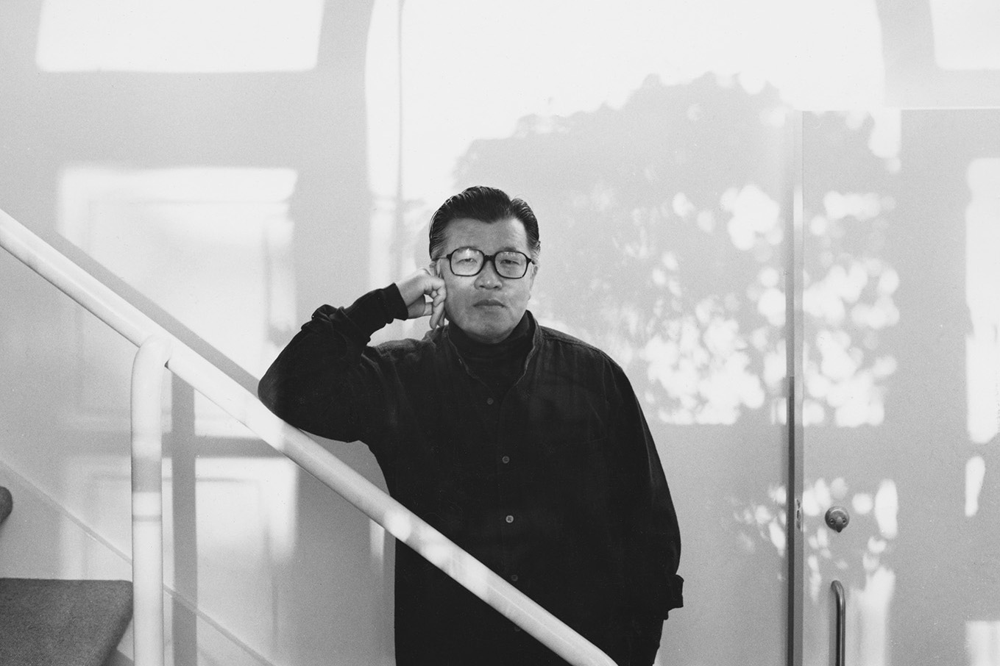
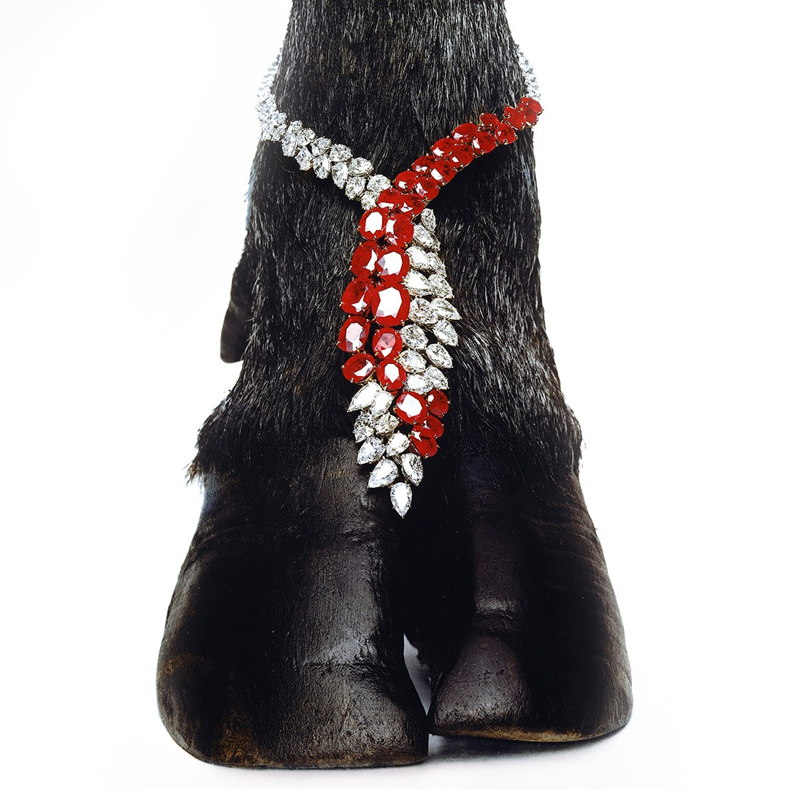
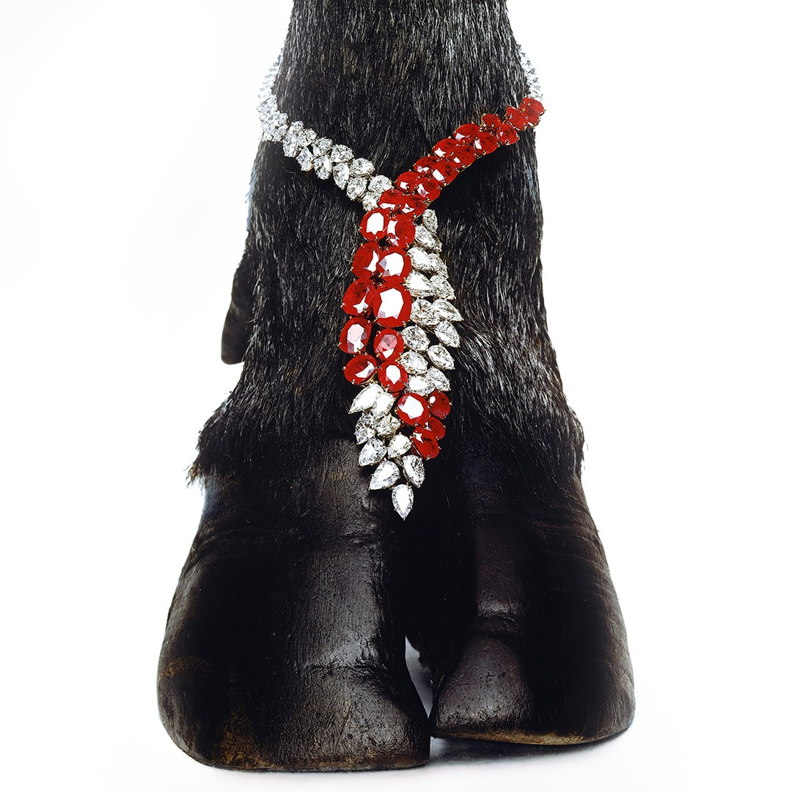

Jerry Hall, Saint Martin, 1975 © HIRO
Elsa Peretti Gold Bone Cuff, 1984 © HIRO
Black Evening Dress in Flight, New York, 1963 © HIRO

Yasuhiro Wakabayashi (3 November 2930 - 15 Auguest 2021), known professionally as Hiro, was a Japanese-born American photographer. Best known for his fashion and still life work, Hiro’s surreal vision of glamour established him among giants of the industry.
In 1954, Hiro arrived in the United States with one goal: to work with Richard Avedon. After briefly enrolling in the School of Modern Photography in New York, Hiro dropped out and began apprenticing with photographers Lester Bookbinder and Reuben Samberg. By the end of 1956, Hiro achieved his dream: an apprenticeship at the Avedon studio.
“Hiro is no ordinary man,” Avedon said. “He is one of the few artists in the history of photography. He is able to bring his fear, his isolation, his darkness, his splendid light to film.”
The following year, Avedon put in a word with Alexey Brodovitch, the legendary art director of Harper’s Bazaar, who brought Hiro into the fold, embarking on an 18-year collaboration that would result in some of the most innovative fashion images of the mid-20th century. In 1963, Hiro would become the only photographer working under contract at the magazine, a position he held for the next decade.
In 1969, he earned the title of “Photographer of the Year: from the prestigious American Society of Magazine Photographers for his spellbinding images of fashion, beauty, and accessories. Embracing Brodovitch’s dictum, “If you look in your camera and see something you’ve seen before, don’t click the shutter,” Hiro transformed commercial photography into fine art, crafting fantastical landscapes of the strange, mysterious, and surreal.
WORKS
Jerry Hall, Saint Martin, 1975 © HIRO
Elsa Peretti Gold Bone Cuff, 1984 © HIRO
Black Evening Dress in Flight, New York, 1963 © HIRO


Salt Flats, Wendover, Utah, 1973 © Hiro
Akiko in Rudi Gernreich Sheath, 1966 © Hiro
Beauty in Strength, 1964 © Hiro

 

Balenciaga, Four Sided Dress, 1967 © Hiro
Hooded Coat by Pierre Cardin, 1966 © Hiro
Harry Winston Ruby and Diamond Necklace, 1963 © HIRO